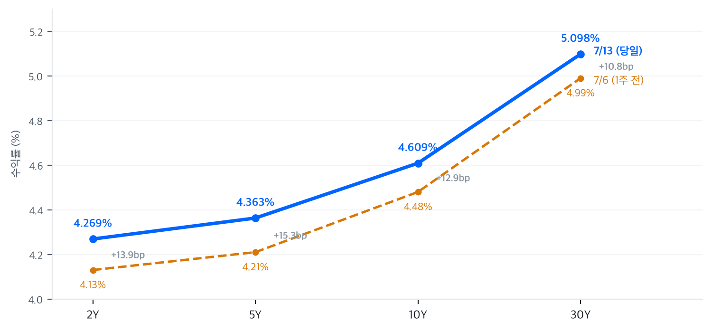

호르무즈발 유가 쇼크(WTI +9.4%)에 나스닥 -1.55%, 국채 전 구간 금리 상승 — SK하이닉스 HBM 눈높이 하향이 메모리주 동반 급락을 더 키운 하루.
동인 — 오늘 장을 움직인 축은 두 개다. 하나는 주말 사이 재점화된 미국-이란 지정학 리스크, 다른 하나는 SK하이닉스발 메모리 실적 눈높이 하향이다. 두 재료가 같은 날 겹치면서 나스닥이 -1.55%로 지수 중 가장 크게 밀렸다.
크로스에셋 정합성 — "유가↑ → 금리↑ → 성장주·금 압박, 에너지 상대 강세"라는 논리가 주식·채권·원자재·FX 네 자산군에서 일관되게 확인된다. 달러 소폭 강세에 엔화 강세가 동반된 조합도 리스크오프와 정합적이다. 다만 원화가 서킷브레이커 급락장에도 강세 흐름을 유지한 점은, 이번 조정이 시스템 리스크가 아니라 유가·메모리라는 식별 가능한 두 재료에 국한된 섹터 조정임을 뒷받침한다.
다음 촉매 — 가장 가까운 트리거는 내일(7/14) 발표될 6월 CPI다. 컨센서스는 헤드라인 -0.1%MoM(약 3.9%YoY), 근원 +0.2%MoM(약 2.9%YoY). 유가 급등이 반영되기 전 지표라는 점에서 하회 시에도 안도 랠리의 지속력은 제한적일 수 있다. 이어 7/15 PPI, 신임 Fed 의장 Kevin Warsh의 첫 의회 출석, 대형 은행 실적 시즌도 주목 재료다.
| 지수 | 종가 | %등락 |
|---|---|---|
| Nasdaq | 25,873.18 | -1.55% |
| S&P 500 | 7,515.34 | -0.79% |
| Dow | 52,498.64 | -0.26% |
| Russell 2000 | 2,953.17 | -0.83% |
| S&P 500 Growth | 136.46 | -1.54% |
| S&P 500 Value | 230.88 | +0.17% |
| 섹터 (등락률 순) | 종가 | %등락 |
|---|---|---|
| Energy | 56.74 | +3.01% |
| Utilities | 45.72 | +0.68% |
| Financials | 56.07 | +0.65% |
| Consumer Staples | 84.59 | +0.56% |
| Health Care | 161.41 | +0.35% |
| Communication Svcs | 111.59 | -0.04% |
| Materials | 50.58 | -0.61% |
| Industrials | 180.37 | -0.85% |
| Consumer Disc. | 116.04 | -1.02% |
| Technology | 181.28 | -2.42% |
전일 종가 대비 갭다운으로 출발한 뒤 장중에 낙폭을 더 키운 하루였다. 나스닥은 시가 26,094.55(전일 종가 대비 -0.71%)로 출발해 10:30 ET까지는 시가 부근에서 버텼지만, 11시 이후 오후 내내 흘러내려 15:00에 시가 대비 -0.98%인 25,838선까지 밀렸고 막판 30분 소폭 반등으로 시가 대비 -0.83%에 마감했다 — 개장 낙폭이 유지된 게 아니라 장중 하락이 추가로 얹힌 그림이다.
반면 다우는 개장 직후 52,820선까지 오르며 반등을 시도한 뒤 정오 52,399선 저점을 찍고 오후 내내 횡보 안정됐다 — 유가 급등 수혜인 에너지(+3.01%)와 금융(+0.65%)이 받쳐준 결과다. 촉매는 개장 전부터 명확했다.
주말 사이 트럼프 대통령이 호르무즈 해협을 통과하는 이란 선박 봉쇄 재개를 언급하며 유가가 갭 상승했고(CNBC), 여기에 SK하이닉스발 메모리 실적 눈높이 하향이 겹치며 반도체 비중이 큰 나스닥이 하락을 주도했다.
전략 해석오늘 장의 성격은 단순한 지정학 리스크오프가 아니라 "유가발 매크로 악재 + 메모리 자체 실적 눈높이 하향"이 겹친 복합 조정으로 읽힌다. 섹터 보드가 그 구조를 그대로 보여준다 — 에너지(+3.01%)가 유가 급등의 직접 수혜로 지수를 방어했고, 유틸리티·필수소비재·헬스케어 등 방어 섹터가 일제히 플러스를 지킨 반면 기술(-2.42%) 홀로 큰 폭으로 밀렸다. 스타일 지수에서도 같은 결론이 나온다: S&P 500 Growth -1.54% vs Value +0.17%, 스프레드 1.7%p의 전형적인 성장주 이탈·방어 로테이션이며, 전방위 패닉과는 거리가 있다.
| 만기 | 수익률 (7/13) | 전일 대비 | 1주 전 (7/6) | 주간 변화 |
|---|---|---|---|---|
| 2Y | 4.269% | +5.9bp | 4.13% | +13.9bp |
| 5Y | 4.363% | +5.5bp | 4.21% | +15.3bp |
| 10Y | 4.609% | +4.0bp | 4.48% | +12.9bp |
| 30Y | 5.098% | +2.7bp | 4.99% | +10.8bp |

주간 변화: 2Y +13.9bp · 5Y +15.3bp · 10Y +12.9bp · 30Y +10.8bp — 벨리(5Y)가 주도한 전 구간 베어 무브 (자료: yfinance·FRED)
주간 커브 변화 — 지난 1주간(7/6→7/13) 커브는 전 구간이 10.8~15.3bp 오르는 베어 무브를 보였다. 상승을 주도한 건 벨리(5Y +15.3bp)였고, 단기(2Y +13.9bp)가 장기(30Y +10.8bp)보다 더 밀리며 2s10s 스프레드는 35bp에서 34.0bp로 좁혀졌다 — 완만한 베어 플래트닝이다. 커브 자체는 여전히 정상(우상향) 상태를 유지했다.
해석·듀레이션 전략 — 유가 급등에 따른 2차 인플레이션 우려에 Fed 이사 Waller의 매파적 발언이 겹치면서 커브 앞쪽이 장기물보다 빠르게 밀렸다. 전략적으로는 전반적 듀레이션 비중 축소 내지 중립을 권하며, 2Y가 4.35~4.40% 구간을 돌파하며 추가 매파 재료가 겹칠 경우 단기물 언더웨이트를 강화하는 트리거로 삼을 만하다. 벨리가 가장 많이 밀린 만큼 5Y 신규 진입은 7/14 CPI 확인 후가 안전하다.
| 통화 | 수준 | %등락 |
|---|---|---|
| DXY | 101.28 | +0.31% |
| USD/KRW | 1,498.48 | -0.49% |
| USD/JPY | 161.88 | -0.30% |
| EUR/USD | 1.1404 | -0.25% |
해석 — DXY +0.31%의 완만한 달러 강세에 엔화 강세(USD/JPY -0.30%)가 얹힌, 리스크오프 국면의 교과서적 조합이다. 눈에 띄는 건 원화다. 코스피 서킷브레이커까지 발동된 급락장이었음에도 USD/KRW는 -0.49% 하락(원화 강세)하며 7/6 1,531원에서 이어져 온 주간 원화 회복 흐름(한 주간 약 -2.1%)을 지켰다. 주식시장 충격이 통화시장으로 전이되지 않았다는 뜻으로, 외국인 자금의 구조적 이탈이라기보다 메모리 섹터 단위의 조정으로 소화되고 있음을 시사한다. USD/KRW 1,500선 재돌파 여부가 전이 리스크의 1차 확인 지표다.
| 품목 | 가격 | %등락 |
|---|---|---|
| WTI | $78.14 | +9.42% |
| Brent | $83.30 | +9.59% |
| Natural Gas | $2.90 | -1.46% |
| Gold | $3,997.00 | -2.61% |
최대 변동: 원유(WTI +9.42%) — 트럼프 대통령의 호르무즈 해협 봉쇄 재개 발언이 직접 촉매다. WTI는 아시아 시간대 새벽 72.86달러 저점에서 출발해 뉴욕 오전부터 상승이 가속됐고, 정규장 내내 오름폭을 키워(13:30~14:00 ET 77~78달러대) 시간외 저녁 80.13달러까지 찍은 뒤 78달러대에 마감했다 — 장 마감까지 상승세가 꺾이지 않은 원웨이 랠리로, 지정학 헤드라인이 장중 한 번도 디스카운트되지 않았다는 점이 지난주 되돌림 장세와 결정적으로 다르다.
장중 흐름·해석 (금) — 금(-2.61%)은 전형적인 "지정학 리스크오프 = 금 강세" 공식과 어긋났다. 뉴욕 개장 직후 9:30부터 한 시간 만에 4,051→4,024달러로 급락했고 12:30 ET 4,000.3달러 저점까지 밀린 뒤 4,000선을 방어했다. 국채금리 전 구간 상승(실질금리 상승)이 금 보유의 기회비용을 높이면서, 금리 요인이 안전자산 수요를 압도한 결과다.
| 자산군 | 판단 | 전략 근거 |
|---|---|---|
| 주식 | 중립~비중축소 | 지수 낙폭은 크지 않지만 유가 쇼크+메모리 실적 경계감이 겹쳐 단기 변동성 확대 국면. 방어·에너지 상대 우위 |
| 채권 | 듀레이션 축소 | 전 구간 금리 상승(주간 +10.8~15.3bp), 매파 발언 + 유가발 인플레 우려. 5Y 신규 진입은 CPI 확인 후 |
| FX | 달러 중립~소폭 강세 | DXY +0.31%·엔 강세의 리스크오프 조합. 원화는 급락장에도 강세 유지 — 1,500선 재돌파가 경계 트리거 |
| 원자재 | 원유 추격 매수 자제 | 하루 +9%대 급등으로 지정학 프리미엄이 상당 부분 선반영 — 헤드라인 완화 시 급반락 리스크 |
KIS(한국투자증권)가 2분기 영업이익 전망을 컨센서스(약 65조원) 대비 약 8% 낮은 약 60.4조원으로 제시, HBM4 출하 지연·계약 의존도 심화를 지목했다. 코스피에는 서킷브레이커(20분간 거래정지)가 발동됐고, 삼성전자(-10.70%)와 미국 메모리 3사가 동반 급락하며 한국발 쇼크가 글로벌 메모리 밸류체인 전체로 번졌다.
AI 인프라 밸류체인 내 최대 낙폭. 하이퍼스케일러들의 최근 실적 코멘트에서 AI 데이터센터 자본지출(capex) 증가세 둔화 신호가 나온 가운데, 메모리발 반도체 전반의 리스크오프가 커스텀 실리콘 진영에 집중됐다. 1주 누적으로는 -12.7%(7/6 249.27 → 217.53)로 조정 폭이 깊다.
| 종목 | 종가 | %등락 |
|---|---|---|
| Micron (MU) | $937.00 | -4.32% |
| Western Digital (WDC) | $555.55 | -4.64% |
| Seagate (STX) | $860.66 | -5.46% |
| Nvidia (NVDA) | $203.53 | -3.52% |
| Samsung Elec (005930.KS) | ₩254,500 | -10.70% |
| SK hynix (000660.KS) | ₩1,845,000 | -15.37% |
업계 뉴스 — SK하이닉스가 이번 하락의 진앙이다. KIS의 2분기 눈높이 하향(HBM4 출하 지연·계약 의존도 심화)이 촉매였고, 미국 증시에서도 여파가 이어져 마이크론·웨스턴디지털·시게이트가 4~5%대 동반 급락했다.
투자 관점 — 지난주 SK하이닉스 미 IPO 흥행(7/10 ADR +15%)으로 달아올랐던 메모리 섹터가 단 한 번의 국내 증권사 눈높이 하향에 -15%로 반응했다는 것 자체가, 현 주가에 얼마나 높은 기대가 쌓여 있었는지 말해준다. HBM 수요의 구조적 스토리가 꺾인 증거는 아직 없으나, 밸류에이션이 뉴스 한 건에 취약한 구간인 만큼 분할 접근과 실적 시즌 가이던스 확인이 우선이다.
| 종목 | 분야 | 종가 | %등락 |
|---|---|---|---|
| Marvell (MRVL) | 커스텀 실리콘·네트워킹 | $217.53 | -7.75% |
| Coherent (COHR) | 광부품·트랜시버 | $307.39 | -5.27% |
| GE Vernova (GEV) | 전력·그리드 | $1,042.60 | -4.49% |
| Lumentum (LITE) | 광통신·레이저 | $768.15 | -4.22% |
| Vertiv (VRT) | 전력·냉각 인프라 | $305.87 | -4.07% |
업계 동향 — 하이퍼스케일러들의 최근 실적 코멘트에서 AI 데이터센터 자본지출(capex) 증가세 둔화 신호가 나오면서 투자자들의 위험 회피가 낙폭의 주요 배경으로 지목된다. 5종목 전부 -4% 이하로 밀린 무차별 하락이라는 점에서, 이날은 서브섹터 차별화보다 AI 인프라 전체에 대한 베타 축소가 우세했다.
투자 관점 — 커스텀 실리콘(MRVL)의 낙폭이 광통신·전력 인프라 대비 두 배 가까이 깊다는 점은 여전히 유효한 신호다 — capex 둔화 국면에서 하이퍼스케일러 내재화 리스크에 노출된 진영이 먼저 팔린다. 전력(GEV)·냉각(VRT) 쪽은 수주 잔고 기반 실적 가시성이 상대적으로 높아, 되돌림 시 우선 순위는 인프라 쪽에 둔다.
| 지표 | Actual | Forecast | Previous | 발표일 |
|---|---|---|---|---|
| JOLTS Job Openings | 7.594M | 6.975M | 7.6M (4월) | 2026-06-30 |
| Initial Jobless Claims | 215K | 218K | 217K | 2026-07-09 |
| Nonfarm Payrolls | +57K | +115K | +129K (5월) | 2026-07-02 |
| Unemployment Rate | 4.2% | — | 4.2%대 | 2026-07-02 |
| 지표 | Actual | Forecast | Previous | 발표일 |
|---|---|---|---|---|
| ISM Manufacturing PMI | 53.3 | — | 54.0 (5월) | 2026-07-01 |
| ISM Services PMI | 54.0 | — | 54.5 (5월) | 2026-07-06 |
| GDP Growth QoQ | 1.6% (2차) | — | 2.0% (속보) | 2026-05-28 |
| 지표 | Actual | Forecast | Previous | 발표일 |
|---|---|---|---|---|
| Michigan Consumer Sentiment | 49.5 (확정) | 50.0 | 44.8 (5월) | 2026-06월 |
| CB Consumer Confidence | 91.2 | 94.4 | 90.6 (5월) | 2026-06-30 |
| 지표 | Actual | Forecast | Previous | 발표일 |
|---|---|---|---|---|
| Michigan 1Y Inflation Exp. | 4.6% | — | 4.8% (5월) | 2026-06월 |
| NY Fed 1Y Inflation Exp. | 3.7% | — | 3.5% (5월) | 2026-07-07 |
| Core PCE Price Index YoY | 3.40~3.41% (5월) | — | 3.30% (4월) | 2026-06-25 |
시장 해석 — CME FedWatch 기준(7/29 FOMC), 인하 가능성은 0%로 배제된 상태이며 시장은 동결 74.9%, 25bp 인상 25.1%를 반영 중이다(Motley Fool). 5월 CPI가 4.2%YoY로 튀어 오르면서 시장의 초점이 "인하 기대"에서 "인상 리스크 관리"로 이동했고, 오늘의 유가 +9%대 급등은 이 인상 리스크 프라이싱을 한층 끌어올릴 수 있는 재료다.
자료: Yahoo Finance (yfinance — 지수·섹터·스타일·FX·원자재·개별 종목·5Y/10Y/30Y 금리·30분봉 장중 데이터), FRED (DGS2/DGS5/DGS10/DGS30 — 주간 비교 및 2Y 전일 기준). 2Y 7/13 당일치는 FRED 게시 지연으로 복수 보도 교차확인 값(4.269%)을 사용.
뉴스 코멘터리는 CNBC, Motley Fool 등 공개 보도, 금리 경로는 CME FedWatch 집계 인용, SK하이닉스 전망은 한국투자증권(KIS) 리포트 보도 기준. ※ 정정 이력(2026-07-14): 초판에 웹 리서치로 대체 수집됐던 시세를 yfinance/FRED 정본으로 전면 재검증 — 누락됐던 섹터 7종·스타일 지수·5Y 금리·천연가스·COHR/LITE·수익률 커브 차트를 추가하고, FX(방향 포함)·원자재·메모리·AI 인프라 등락률을 정정함.
본 자료는 정보 제공 목적으로 작성되었으며, 투자 권유 또는 특정 종목의 매매를 추천하는 것이 아닙니다. 투자 판단과 그 결과에 대한 책임은 투자자 본인에게 있습니다.